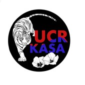

Austin Noh
For 2 months I have been working under a dentist in Moreno Valley. I have been shadowing him while he practices dentistry learning what dentists do and what the job pertains. I have been working at this specific dental office for 2 months learning the ins and outs of dental work. Since my goal is to dental school after college, I believed that shadowing under a dentist would be the best way to gain on-site experience of dentistry. I have learned a lot shadowing dentists, being able to differentiate and spot a cavity, and watching them operate from a 3rd person perspective. Working in this environment is nothing like I have ever been in for just because of how professional the environment is. I believed that getting experience before I actually applied to dental school would help me decide if Dentistry was actually the career that I wanted to pursure in the future.
During college I have also been working part time as a server at a restaurant called Star Crab in Riverside, CA. Here I learned a lot about customer service and the ins and outs of the restaurant industry. As a server I interact with hundreds of new customers every day. It has taught me many skills such as time management, efficiency, and customer service. Being a server, we are also in charge of closing out the cash register. What this means is that every night we have to calculate exactly how much money we made on that particular day, including cash receipts and card receipts ensuring that there are no missing funds and that there were no errors at any point during operation. Another major skill that I learned while working at this restaurant is problem solving. In a restaurant environment, to operate as efficiently as possible you need to trust your coworkers and also assist them which allowed me to develop my teamwork skills. Whenever there is someone who is not being efficient or is not working at the pace that is needed, we as workers need to problem solve to ensure that everything begins to run efficiently again. For instance, at the restaurant we had an issue where all of the drinks did not taste like how they were supposed to, because the C02 that runs the soda machine broke. So in order to solve this issue we quickly went to the nearest warehouse and bought 60 2-liter bottles of soda to ensure that we could still provide drinks to our customers.
Experience
Server
• Responsible for serving and taking orders
• Experience with POS systems and cash registers
• Experience with customers
President
• Lead a student organization at UC Riverside
• Oversaw and delegated responsibilities to other members
• Created events for 100's of students
Education
UC Riverside
Portfolio
